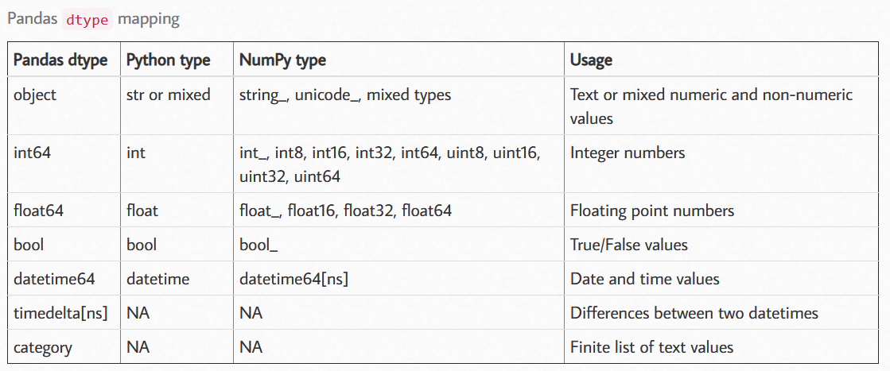

Pandas官方文档
相关库
1
2
| import pandas as pd
import numpy as np
|
创建数据集
1
2
3
4
5
6
|
data=pd.DataFrame({
"id":np.arange(101,111)
})
data
|
写入与读取
1
2
3
4
5
|
data.to_csv("XXX.csv",index=False)
data = pd.read_csv('XXX.csv')
|
Python中的单，双，三引号用法
数据查看
数据集基础信息
1
2
3
4
5
6
7
| data.shape
data.dtypes
data['id'].dtype
data.ndim
data.index
data.columns
data.values
|
数据集整体情况
1
2
3
4
| data.head()
data.tail()
data.info()
data.describe()
|
数据清洗
异常值
箱线图
空值
空值查询
1
2
3
4
5
6
7
8
9
| data.isnull()
data['columnA'].isnull()
data.isnull().mean()
data.isnull().sum()
data.isnull().sum().sort_values(ascending=False)
|
空值处理
pandas.DataFrame.fillna（value = None，method = None，inplace = False）
- value：用于填充的值，可以是具体值、字典和数组，不能是列表；
- method：填充方法，有 ffill(填充上一个值) 和 bfill(填充下一个值) 等；
- inplace默认无False，如果为True，则将修改此对象上的所有其他视图。
更多 pandas.DataFrame.fillna()用法
空格/‘-‘/‘_’ 等特殊字符处理
只针对object类型数据
1
2
3
| for i in data:
if pd.api.types.is_object_dtype(data[i]):
data[i]=data[i].str.strip()
|
大小写转换
1
2
3
4
| Series.str.title()
Series.str.capitalize()
Series.str.upper()
Series.str.lower()
|
更多 pandas.Series.str 相关用法
数据替换
1
2
3
4
5
| Series.replace('A', 'B', inplace=True)
Series.replace(-10,np.nan,inplace=True)
Series.replace(np.nan,Series.mean(),inplace=True)
|
数据删除
等值判断
1
2
3
| data1 = data[data.origin != 'American']
data2=data[(data != 'Japan').all(1)]
|
去除重复值
1
| Series.drop_duplicates()
|
更多 pandas.DataFrame.drop_duplicates() 用法
数据格式转换
将某一列转换为 str 格式
Series.astype('str)
常见的数据类型对照

pandas.Series.map
pandas.DataFrame.apply
更改column_name
1
| data.rename(columns={'id':'ID', 'origin':'产地'})
|
数据预处理
数据合并
merge
DataFrame.merge(self，right，how =‘inner’，on = None)
- right 指要合并的对象
- on 指要加入的列或索引级别名称，必须在两个 DataFrame 中都可以找到。
- how 决定要执行的合并类型：left（使用左框架中的键）、right、inner（交集，默认）、outer（并集）
先创建两个df
1
2
3
4
5
6
7
8
9
10
| >>> df1 = pd.DataFrame({'a': ['foo', 'bar'], 'b': [1, 2]})
>>> df2 = pd.DataFrame({'a': ['foo', 'baz'], 'c': [3, 4]})
>>> df1
a b
0 foo 1
1 bar 2
>>> df2
a c
0 foo 3
1 baz 4
|
1
2
3
| >>> df1.merge(df2, how='inner', on='a')
a b c
0 foo 1 3
|
1
2
3
4
| >>> df1.merge(df2, how='left', on='a')
a b c
0 foo 1 3.0
1 bar 2 NaN
|
1
2
3
4
5
6
7
8
9
10
| >>> df1 = pd.DataFrame({'left': ['foo', 'bar']})
>>> df2 = pd.DataFrame({'right': [7, 8]})
>>> df1
left
0 foo
1 bar
>>> df2
right
0 7
1 8
|
1
2
3
4
5
6
| >>> df1.merge(df2, how='cross')
left right
0 foo 7
1 foo 8
2 bar 7
3 bar 8
|
更多 pandas.DataFrame.merge() 用法
append
在原数据集的下方合并入新的数据集
df1.append(df2)
concat
pandas.concat(objs,axis = 0,ignore_index = False,keys = None)
- objs:Series，DataFrame或Panel对象的序列或映射。
- axis：串联的轴，默认为0，即以索引串联（竖直拼接）；如果为1，则以列串联（水平拼接）
- ignore_index：清除现有索引并将其重置，默认为False。
- key：在数据的最外层添加层次结构索引。
比如
1
| data_new=pd.concat([data,data2,data3],axis = 1,keys=['data', 'data2','data3'])
|
更多 pandas.concat() 用法
设置索引列
1
2
3
| data.set_index("id")
data.reset_index(drop=True)
|
按照特定列的值排序
1
2
3
| data.sort_index()
data.sort_values(by="columnA",ascending = True)
|
更多 pandas.DataFrame.sort_values()用法
分类显示
1
2
|
data['level'] = np.where(data['money']>=10, 'high', 'low')
|
分组标记
定位到 level 行==high 并且 origin 行==China，sign列的数据。赋值为“棒”
data.loc[(data['level']=="high") & (data['origin']=="China"),"sign"]="棒"